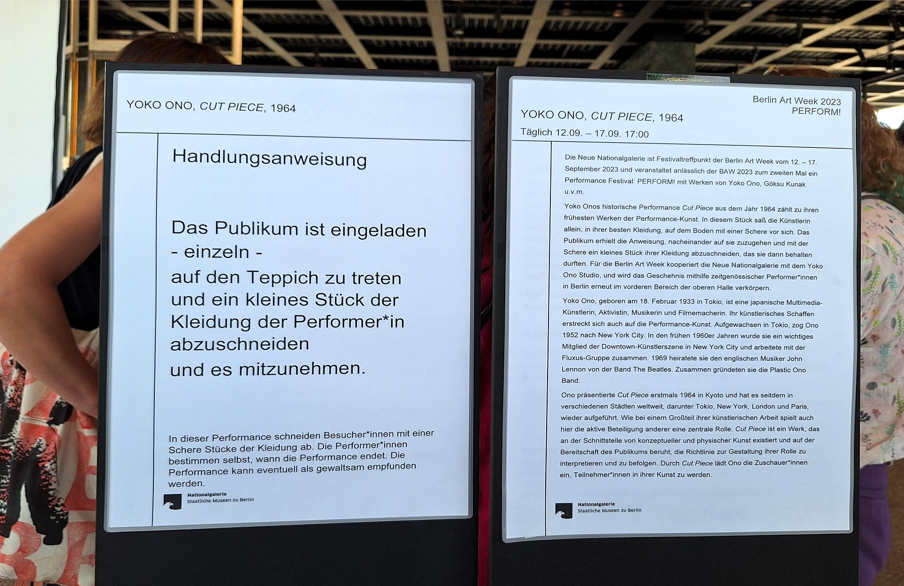

다운로드 필요
대표 화가
조지프 코수스, 《하나이면서 셋인 의자》 · 개념미술 · 국제 현대미술
선정 이유: 코수스는 실제 의자, 사진, 사전 정의를 나란히 놓아 개념미술의 언어와 재현 문제를 초심자도 직접 비교하게 한다.
하나의 대상을 물체, 이미지, 단어라는 세 방식으로 제시하지만 어느 것이 더 진짜 의자인지는 정해지지 않는다. 작품은 제작 기술보다 정의와 의미가 어떻게 생기는지를 질문하는 사고의 장치가 된다.
Conceptual Art
상세 학습
개념미술은 1960년대 이후 완성된 물체보다 아이디어, 언어, 지시문, 분류와 기록이 작품을 성립시킬 수 있는지 시험한 흐름이다. 물질을 완전히 없애는 양식이 아니라 작품의 중심을 제작 기술에서 사고와 제도로 옮긴다.
미니멀리즘의 단순 물체와 반복을 출발점으로 삼되 물체보다 정의와 조건을 묻고, 다다의 반예술 전략을 미술 제도와 정보의 분석으로 확장한다.
흔한 오해: 만들기 쉽거나 시각적으로 빈약한 작품이라는 뜻이 아니다. 작품을 성립시키는 문장, 맥락, 실행 가능성, 기록의 관계를 읽어야 한다.
학술 참고: MoMA · Conceptual art
개념미술의 시대적 배경과 시각적 특징을 국가별 전개 속에서 살펴본다.
선정 이유: 코수스는 실제 의자, 사진, 사전 정의를 나란히 놓아 개념미술의 언어와 재현 문제를 초심자도 직접 비교하게 한다.
하나의 대상을 물체, 이미지, 단어라는 세 방식으로 제시하지만 어느 것이 더 진짜 의자인지는 정해지지 않는다. 작품은 제작 기술보다 정의와 의미가 어떻게 생기는지를 질문하는 사고의 장치가 된다.
더 볼 이유: 와이너는 개념미술에서 작품의 실행보다 언어로 제시된 아이디어가 우선할 수 있음을 보여 준다.
문장 자체가 작품의 완전한 형태가 된다는 점에서 물질보다 개념을 앞세우는 이 사조의 특징이 드러난다. 작품은 제작·미제작·타인 제작 모두 가능하다고 선언해 저자와 소유의 조건을 연 것이 와이너만의 특성이다.
더 볼 이유: 르윗은 개념미술에서 작품의 핵심이 작가가 직접 만든 물체가 아니라 실행 가능한 지시와 체계라는 점을 확립했다.
문장으로 된 규칙을 다른 사람이 벽에 실행할 수 있어 아이디어가 물질보다 우선한다. 저자성을 설계와 실행으로 분리한 점은 르윗만의 특성이다.

더 볼 이유: 온 가와라는 개념미술이 날짜와 존재의 기록만으로 시간·장소·삶의 조건을 다룰 수 있음을 보여 준다.
그날의 날짜만 정확한 서체로 그려 작품을 정보와 사건의 증거로 만든다. 제작하지 못한 날의 캔버스는 폐기하는 엄격한 규칙으로 개인의 삶을 보편적 시간 체계에 연결한 점은 가와라만의 특성이다.
선정 이유: 백남준은 플럭서스의 공연성과 전자매체를 연결해 관객, 시간, 기술의 순환을 한 설치로 보여 준다.
부처상이 폐쇄회로 카메라로 촬영된 자기 모습을 텔레비전에서 바라본다. 오래된 명상 이미지와 실시간 전자 영상이 서로를 비추며 동서 문화, 관찰자와 대상, 현재와 복제의 경계를 흔든다. 다른 사조 연결: 뉴미디어·디지털 아트에도 속하며, 이 카드에서는 플럭서스의 관점에서 본다.

더 볼 이유: 오노 요코는 플럭서스의 간단한 지시와 관객 참여가 윤리적 긴장을 만드는 방식을 보여 준다.
관객이 작가의 옷을 자르는 행위는 완성된 물체보다 사건과 참여를 중시하는 플럭서스의 특징을 드러낸다. 취약한 신체와 관객의 책임을 한 지시문 안에서 드러낸 점은 오노만의 특성이다. 다른 사조 연결: 퍼포먼스 미술·개념미술에도 속하며, 이 카드에서는 플럭서스의 관점에서 본다.
더 볼 이유: 마치우나스는 플럭서스를 국제적 네트워크와 출판·행사 형식으로 조직해 예술과 일상의 경계를 흔든 인물이다.
값싼 인쇄물과 명령문, 공동 행사는 독창적 명품보다 공유 가능한 아이디어를 앞세운다. 여러 작가의 느슨한 활동을 유통 체계와 시각 정체성으로 묶은 점은 마치우나스만의 특성이다.